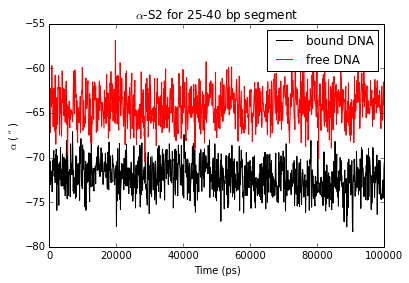
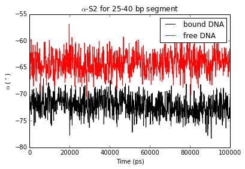

Analysis of backbone torsion angles¶
This tutorial discuss the analyses that can be performed using the Phython APIs included in the do_x3dna package. The tutorial is prepared using ipython notebook and this notebook tutorial file could be downloaded from this link.
Download the input files that are used in the tutorial from this link.
Two following input files are required in this tutorial
- BackBoneCHiDihedrals_cdna.dat (do_x3dna output from the trajectory, which contains the DNA bound with the protein)
- BackBoneCHiDihedrals_odna.dat (do_x3dna output from the trajectory, which only contains the free DNA)
These two file should be present in the current/present working directory.
The Python APIs should be only used when do_x3dna is executed with -ref option.
Detailed documentation is provided here.
Importing Python Modules¶
- numpy: Required for the calculations involving large arrays
- matplotlib: Required to plot the results
- dnaMD:
Python script containing methods or functions to analyze DNA/RNA
structures from the MD trajectories
- The dnaMD.py script should be present in either present working directory or $PYTHONPATH environment variable.
import numpy as np
import matplotlib.pyplot as plt
import matplotlib as mpl
import dnaMD
%matplotlib inline
Initializing DNA object and storing data to it¶
- DNA object is initialized by using the total number of base-pairs
- For each nucleotide, six backbone torision angles (\(\alpha\), \(\beta\), \(\gamma\), \(\delta\), \(\epsilon\) and \(\zeta\)) including \(\chi\) can be calulated.
- These torsion angles of both strands can be read and stored in DNA object from the input file using function set_backbone_dihedrals(...).
{kind=link}
## Initialization
pdna = dnaMD.DNA(60) #Initialization for 60 base-pairs DNA bound with the protein
fdna = dnaMD.DNA(60) #Initialization for 60 base-pairs free DNA
## Loading data from input files in respective DNA object
# parameters = [1,2,3,4,5,6,7,8,9,10,11,12,13,14]
# will read and store alpha, beta, gamma, delta, epsilon, zeta and chi dihedrals of both strands
pdna.set_backbone_dihedrals('BackBoneCHiDihedrals_cdna.dat', bp=[2, 59], parameters=range(1,15), bp_range=True)
fdna.set_backbone_dihedrals('BackBoneCHiDihedrals_odna.dat', bp=[2, 59], parameters=range(1,15), bp_range=True)
Reading file : BackBoneCHiDihedrals_cdna.dat
Reading frame 1000
Finishid reading.... Total number of frame read = 1001
Reading file : BackBoneCHiDihedrals_odna.dat
Reading frame 1000
Finishid reading.... Total number of frame read = 1001
Backbone Torsion angles as a function of time (manually)¶
- A specific type of torsion angle of a nucleotide/s can be extracted from the DNA obejct using function dnaMD.DNA.get_parameters(...).
- The extracted angles can be plotted as a function of time
- The extracted angles (average) of a strand for the DNA segment can be plotted as a function of time
Following example shows alpha, \(\alpha\) of first strand vs Time plots. These example also shows that how to extract the parameters value from the DNA object. Other properties could be extracted and plotted using similar steps.
# Extracting "alpha" of first strand of 20 to 30 base-steps
alpha_S1, bp_idx = fdna.get_parameters('alpha S-1',[20,30], bp_range=True)
# SI-alpha vs Time for 22nd base-pair
plt.title('22nd bp')
plt.plot(pdna.time, alpha_S1[2]) # index is 2 for 22nd base-step: (20 + 2)
plt.xlabel('Time (ps)')
plt.ylabel(r'$\alpha$-S1 ( $^o$)')
plt.show()
# Average SI-alpha vs Time for segment 20-30 base-pairs
avg_alpha_S1 = np.mean(alpha_S1, axis=0) # Calculation of mean using mean function of numpy
plt.title('20-30 bp segment')
plt.plot(pdna.time, avg_alpha_S1)
plt.xlabel('Time (ps)')
plt.ylabel(r'$\alpha$-S1 ( $^o$)')
plt.show()
# Average SI-alpha vs Time for segment 24-28 base-step
# index of 24th base-step is 4 (20 + 4). index of 28th base-step is 8 (20 + 8)
avg_alpha_S1 = np.mean(alpha_S1[4:8], axis=0)
plt.title('24-28 bp segment')
plt.plot(pdna.time, avg_alpha_S1)
plt.xlabel('Time (ps)')
plt.ylabel(r'$\alpha$-S1 ( $^o$)')
plt.show()
Backbone torsion angles as a function of time (using provided functions)¶
Above examples show the method to extract the values from the DNA object. However, dnaMD.DNA.time_vs_parameter(...) function could be use to get torsion angle as a function of time for the given nucleotides or strand of the DNA segment
# S1-gamma and S2-gamma vs Time for 22nd bp
plt.title(r'$\gamma$ for 22nd bp')
time, S1 = fdna.time_vs_parameter('gamma S-1', [22])
time, S2 = fdna.time_vs_parameter('gamma S-2', [22])
plt.plot(time, S1, c='b', label='Strand-1')
plt.plot(time, S2, c='r', label='Strand-2')
plt.xlabel('Time (ps)')
plt.ylabel('$\gamma$ ( $^o$)')
plt.legend()
plt.show()
# alpha-S2 vs Time for 25-40 bp segment
plt.title(r'$\alpha$-S2 for 25-40 bp segment')
# Bound DNA
# Assume that the torsion angle a given segment is average over the nucelotides
time, value = pdna.time_vs_parameter('alpha S-2', [25, 40], merge=True, merge_method='mean')
plt.plot(time, value, label='bound DNA', c='k') # balck color => bound DNA
# Free DNA
time, value = fdna.time_vs_parameter('alpha S-2', [25, 40], merge=True, merge_method='mean')
plt.plot(time, value, label='free DNA', c='r') # red color => free DNA
plt.xlabel('Time (ps)')
plt.ylabel(r'$\alpha$ ( $^o$)')
plt.legend()
plt.show()
 

Backbone torsional angles wheel of nucleotides/DNA-segment¶
- Angle wheel (Polar plot) of backbone torsion angles is a compat way to show the conformational flcutuations of backbone dynamics.
- Below is a defnition of method, which can be use to plot angles wheel for set of angle types.
def plot_angle_wheel(angles, colormap, color_res = 20, bin_size=2, ax=None, cb_pad=0.2, cb_shrink=0.75):
""" Plot torsion wheel for given number of angles
Arguments:
angles (2D array): of shape (type,numbers)
colormap (string): name of colormap
color_res (int) : number of color-bins in colormap
bin_size (int) : size of bin in Degree for calculation of histogram
axis (matplotlib axis): matplotlib axis instance. If (ax != None), colorbar instance will be returned.
cb_pad (float): Gap between wheel-plot and colorbar
cb_shrink (float): To increase or decrease size of colorbar
Return:
None : If ax=None
or
colorbar (matplotlib colorbar): if (ax != None) matplotlib colorbar instance.
This can be used to modify properties of color-bar
"""
angles = np.asarray(angles)
# Number of angle types to plot
nangle = angles.shape[0]
# Number of input angles for each angle type
nframe = angles.shape[1]
angle_hist = []
# Creating reference array of angle for histogram
hist_idx = np.arange(0, 360, bin_size, dtype=float)
# Initializing histogram array over 360 Deg using bin-size
for i in range(nangle):
angle_hist.append(np.zeros(hist_idx.shape[0]))
angle_hist = np.asarray(angle_hist)
#### Calculating histogram ###
for i in range(len(angles)):
for j in range(len(angles[i])):
# Converting angle of negative direction to postive direction
if angles[i][j]<0:
tmp_theta = 360 + angles[i][j]
else:
tmp_theta = angles[i][j]
# Finding index in reference array for angle (index of nearest value)
idx = (np.abs(hist_idx-tmp_theta)).argmin()
# Updating angle histogram
angle_hist[i][idx] += 1
# Calculating fraction/precentage
angle_hist[i] = np.divide(angle_hist[i],nframe)
# minimum and maximum value
min_max = [0.0, np.amax(angle_hist)]
# Creating COLORMAP. To change colormap, see this link:
# (http://matplotlib.org/examples/color/colormaps_reference.html)
# Creating array for color-range
crange = np.linspace(0, min_max[1], color_res)
# Creating array of color;
# To automate colormap inside a method,
# Following is equivalent to: color = plt.cm.colormap(crange);
# where colormap could be any type of maps that are implemented in the matplotlib
color = getattr(plt.cm, colormap)(crange)
#### Plotting wheel ####
# Width of bin in radian
width = bin_size*(np.pi/180)
# Plot each bin with respective color
# First loop over concentric circles
# Second loop along the respective circle
for i in range(len(angle_hist)):
for j in range(len(angle_hist[i])):
# Identifying index of color in color array using value of histogram
c_idx = (np.abs(crange - angle_hist[i][j])).argmin()
# Plotting circular-bar of radius=1 for respective bin, each bar start at radius=i+1 and end at radius=i+2
if angle_hist[i][j] > 0.0:
plt.bar(hist_idx[j]*(np.pi/180), 1, width=width, bottom=i+1, color=color[c_idx], linewidth=0)
# To draw Colorbar. Taken from the following link:
# (http://stackoverflow.com/questions/8342549/matplotlib-add-colorbar-to-a-sequence-of-line-plots)
if ax:
cmap = getattr(mpl.cm, colormap)
norm = mpl.colors.Normalize(vmin=min_max[0], vmax=min_max[1])
sm = plt.cm.ScalarMappable(cmap=cmap, norm=norm)
sm._A = []
cb = plt.colorbar(sm, ax=ax, pad=cb_pad, shrink=cb_shrink)
return cb
else:
return None
Torsional angle wheel for all angles of the DNA segment¶
- To plot the angle wheel using “plot_angle_wheel” method.
- Properties of the plots could be changed using the mehtods of matplotlib.
# Initialization of plot with resolution and figure size
fig = plt.figure(figsize=(12, 6), dpi=300)
# For large figure, use this
#fig = plt.figure(figsize=(18, 12), dpi=300)
# To adjust gaps and margins of subplots
fig.subplots_adjust(wspace=0.3)
##### Plot for first Strand #####
angels_type = ['alpha S-1', 'beta S-1', 'gamma S-1', 'delta S-1', 'epsilon S-1', 'zeta S-1']
label = [r'$\alpha$', r'$\beta$', r'$\gamma$', r'$\delta$', r'$\epsilon$', r'$\zeta$']
# Initialization of first axis or subplot
ax1 = plt.subplot(121, polar=True)
ax1.set_title('Strand I', fontsize=22, y = 1.2)
# to change properties of radial and circular grid-line from dashed to solid
ax1.grid(True, lw=0.5, linestyle='-')
# Extraction of angle data from DNA object
angles = []
for ang_name in angels_type:
values = []
# Extract all individual angles of 10th to 50th base-pairs
for nbp in range(10,50):
time, value = fdna.time_vs_parameter(ang_name, [nbp], merge=False, merge_method='mean')
del time
values = values + list(value)
angles.append(np.array(values))
# Change list to numpy array
angles = np.asarray(angles)
# Plot angle wheel with "PuRd" (purple-red) colormap
colorbar = plot_angle_wheel(angles, colormap='winter_r', color_res=10, bin_size=5,
ax= ax1, cb_pad=0.15, cb_shrink=0.65)
# Labeling wheel for each angle type
ax1.yaxis.set_ticklabels(label, fontsize=22)
##### To increase font-size of angle around perimeter
# Get angle label, which are present at the perimeter of wheel and change it to Degree
xticks = ax1.get_xticks()*180/np.pi
xlabel = []
# Convert angle to string and add Degree symbol
for x in xticks:
xlabel.append('{0}$^o$' .format(int(x)))
# Change postion of angle label to remove any overlap
ax1.set_thetagrids(xticks, frac=1.22)
# At last change the fontsize
ax1.xaxis.set_ticklabels(xlabel, fontsize=22)
# Change the fontsize in colorbar
for text in colorbar.ax.get_yticklabels():
text.set_fontsize(22)
# Clean memory
del angles
##### Plot for Second Strand #####
angels_type = ['alpha S-2', 'beta S-2', 'gamma S-2', 'delta S-2', 'epsilon S-2', 'zeta S-2']
label = [r'$\alpha$', r'$\beta$', r'$\gamma$', r'$\delta$', r'$\epsilon$', r'$\zeta$']
# Initialization of first axis
ax2 = plt.subplot(122, polar=True)
ax2.set_title('Strand II', fontsize=22, y = 1.2)
# to change properties of grid-line
ax2.grid(True, lw=0.5, linestyle='-')
# Extraction of angle data
angles = []
for ang_name in angels_type:
values = []
# Extract all angles of 10th to 50th base-pairs
for nbp in range(10,50):
time, value = fdna.time_vs_parameter(ang_name, [nbp], merge=False, merge_method='mean')
del time
values = values + list(value)
angles.append(np.array(values))
# Change list to numpy array
angles = np.asarray(angles)
# Plot angle wheel with "PuRd" (purple-red) colormap
colorbar = plot_angle_wheel(angles, colormap='winter_r', color_res=10, bin_size=5,
ax= ax2, cb_pad=0.15, cb_shrink=0.65)
# Labeling wheel for each angle type
ax2.yaxis.set_ticklabels(label, fontsize=22)
##### To increase font-size of angle around perimeter
# Get angle label, which are present at the perimeter of wheel and change it to Degree
xticks = ax2.get_xticks()*180/np.pi
xlabel = []
# Convert angle to string and add Degree symbol
for x in xticks:
xlabel.append('{0}$^o$' .format(int(x)))
# Change postion of angle label to remove any overlap
ax2.set_thetagrids(xticks, frac=1.22)
# At last change the fontsize
ax2.xaxis.set_ticklabels(xlabel, fontsize=22)
# Change the fontsize in colorbar
for text in colorbar.ax.get_yticklabels():
text.set_fontsize(22)
# Clean memory
del angles
plt.show()
Torsional angle wheel for average angles of DNA segment¶
- To plot the angle wheel using “plot_angle_wheel” method.
- Properties of the plot could be changed using the mehtods of matplotlib.
# Initialization of plot
fig = plt.figure(figsize=(12, 6), dpi=300)
# For large figure, use this
#fig = plt.figure(figsize=(18, 12), dpi=300)
fig.subplots_adjust(wspace=0.2)
##### Plot for first Strand #####
angels_type = ['alpha S-1', 'beta S-1', 'gamma S-1', 'delta S-1', 'epsilon S-1', 'zeta S-1']
label = [r'$\alpha$', r'$\beta$', r'$\gamma$', r'$\delta$', r'$\epsilon$', r'$\zeta$']
# Initialization of first axis
ax1 = plt.subplot(121, polar=True)
ax1.set_title('Strand I 25-35 bp', fontsize=22, y = 1.2)
# to change properties of grid-line
ax1.grid(True, lw=0.5, linestyle='-')
# Extraction of angle data
angles = []
for ang_name in angels_type:
# To calculate the angle for a segment, angles are avereged over base-pairs
time, value = fdna.time_vs_parameter(ang_name, [25, 35], merge=True, merge_method='mean')
del time
angles.append(value)
# Change list to numpy array
angles = np.asarray(angles)
# Plot angle wheel with "PuRd" (purple-red) colormap
colorbar = plot_angle_wheel(angles, colormap='winter_r', color_res=10, bin_size=5,
ax= ax1, cb_pad=0.15, cb_shrink=0.5)
# Labeling wheel for each angle type
ax1.yaxis.set_ticklabels(label, fontsize=22)
##### To increase font-size of angle around perimeter
# Get angle label, which are present at the perimeter of wheel and change it to Degree
xticks = ax1.get_xticks()*180/np.pi
xlabel = []
# Convert angle to string and add Degree symbol
for x in xticks:
xlabel.append('{0}$^o$' .format(int(x)))
# Change postion of angle label to remove any overlap
ax1.set_thetagrids(xticks, frac=1.22)
# At last change the fontsize
ax1.xaxis.set_ticklabels(xlabel, fontsize=22)
# Change the fontsize in colorbar
for text in colorbar.ax.get_yticklabels():
text.set_fontsize(22)
# Clean memory
del angles
##### Plot for Second Strand #####
angels_type = ['alpha S-2', 'beta S-2', 'gamma S-2', 'delta S-2', 'epsilon S-2', 'zeta S-2']
label = [r'$\alpha$', r'$\beta$', r'$\gamma$', r'$\delta$', r'$\epsilon$', r'$\zeta$']
# Initialization of first axis
ax2 = plt.subplot(122, polar=True)
ax2.set_title('Strand II 25-35 bp', fontsize=22, y = 1.2)
# to change properties of grid-line
ax2.grid(True, lw=0.5, linestyle='-')
# Extraction of angle data
angles = []
for ang_name in angels_type:
# To calculate the angle for a segment, angles are avereged over base-pairs
time, value = fdna.time_vs_parameter(ang_name, [25, 35], merge=True, merge_method='mean')
del time
angles.append(value)
# Change list to numpy array
angles = np.asarray(angles)
# Plot angle wheel with "PuRd" (purple-red) colormap
colorbar = plot_angle_wheel(angles, colormap='winter_r', color_res=10, bin_size=5,
ax= ax2, cb_pad=0.15, cb_shrink=0.5)
# Labeling wheel for each angle type
ax2.yaxis.set_ticklabels(label, fontsize=22)
##### To increase font-size of angle around perimeter
# Get angle label, which are present at the perimeter of wheel and change it to Degree
xticks = ax2.get_xticks()*180/np.pi
xlabel = []
# Convert angle to string and add Degree symbol
for x in xticks:
xlabel.append('{0}$^o$' .format(int(x)))
# Change postion of angle label to remove any overlap
ax2.set_thetagrids(xticks, frac=1.22)
# At last change the fontsize
ax2.xaxis.set_ticklabels(xlabel, fontsize=22)
# Change the fontsize in colorbar
for text in colorbar.ax.get_yticklabels():
text.set_fontsize(22)
# Clean memory
del angles
plt.show()
Torsional angle wheel for average angles of segment of a bound and a unbound DNA¶
- To plot the angle wheel using “plot_angle_wheel” method.
- Here, torsion angles of unbound and bound DNA are compared. Note that data are sparse (only 1000 frames from 100 ns).
# Initialization of plot
fig = plt.figure(figsize=(14, 20), dpi=300)
fig.subplots_adjust(hspace=0.4)
##### Plot for first Strand #####
angels_type = ['alpha S-1', 'beta S-1', 'gamma S-1', 'delta S-1', 'epsilon S-1', 'zeta S-1']
label = [r'$\alpha$', r'$\alpha$', r'$\beta$', r'$\beta$', r'$\gamma$', r'$\gamma$', r'$\delta$', r'$\delta$',
r'$\epsilon$', r'$\epsilon$', r'$\zeta$', r'$\zeta$']
# Initialization of first axis
ax1 = plt.subplot(211, polar=True)
ax1.set_title('Strand I', fontsize=22, y = 1.15)
# to change properties of grid-line
ax1.grid(True, lw=0.5, linestyle='-')
# Extraction of angle data
angles = []
for ang_name in angels_type:
# To calculate the angle for a segment, angles are avereged over base-pairs
# Unbound DNA
time, value = fdna.time_vs_parameter(ang_name, [25, 40], merge=True, merge_method='mean')
del time
angles.append(value)
# Bound DNA
time, value = pdna.time_vs_parameter(ang_name, [25, 40], merge=True, merge_method='mean')
angles.append(value)
# Change list to numpy array
angles = np.asarray(angles)
# Plot angle wheel with "PuRd" (purple-red) colormap
colorbar = plot_angle_wheel(angles, colormap='winter_r', color_res=10, bin_size=5,
ax=ax1, cb_pad=0.1, cb_shrink=0.75)
# Labeling wheel for each angle type
ax1.yaxis.set_ticks(range(1,13))
ax1.yaxis.set_ticklabels(label, fontsize=22)
plt.ylim(0,13)
##### To increase font-size of angle around perimeter
# Get angle label, which are present at the perimeter of wheel and change it to Degree
xticks = ax1.get_xticks()*180/np.pi
xlabel = []
# Convert angle to string and add Degree symbol
for x in xticks:
xlabel.append('{0}$^o$' .format(int(x)))
# Change postion of angle label to remove any overlap
ax1.set_thetagrids(xticks, frac=1.18)
# At last change the fontsize
ax1.xaxis.set_ticklabels(xlabel, fontsize=22)
# Change the fontsize in colorbar
for text in colorbar.ax.get_yticklabels():
text.set_fontsize(22)
# Clean memory
del angles
##### Plot for Second Strand #####
angels_type = ['alpha S-2', 'beta S-2', 'gamma S-2', 'delta S-2', 'epsilon S-2', 'zeta S-2']
label = [r'$\alpha$', r'$\alpha$', r'$\beta$', r'$\beta$', r'$\gamma$', r'$\gamma$', r'$\delta$', r'$\delta$',
r'$\epsilon$', r'$\epsilon$', r'$\zeta$', r'$\zeta$']
# Initialization of first axis
ax2 = plt.subplot(212, polar=True)
ax2.set_title('Strand II', fontsize=22, y = 1.15)
# to change properties of grid-line
ax2.grid(True, lw=0.5, linestyle='-')
# Extraction of angle data
angles = []
for ang_name in angels_type:
# To calculate the angle for a segment, angles are avereged over base-pairs
# Unbound DNA
time, value = fdna.time_vs_parameter(ang_name, [25, 40], merge=True, merge_method='mean')
del time
angles.append(value)
# Bound DNA
time, value = pdna.time_vs_parameter(ang_name, [25, 40], merge=True, merge_method='mean')
angles.append(value)
# Change list to numpy array
angles = np.asarray(angles)
# Plot angle wheel with "PuRd" (purple-red) colormap
colorbar = plot_angle_wheel(angles, colormap='winter_r', color_res=10, bin_size=5,
ax=ax2, cb_pad=0.1, cb_shrink=0.75)
# Labeling wheel for each angle type
ax2.yaxis.set_ticks(range(1,13))
ax2.yaxis.set_ticklabels(label, fontsize=22)
plt.ylim(0,13)
##### To increase font-size of angle around perimeter
# Get angle label, which are present at the perimeter of wheel and change it to Degree
xticks = ax2.get_xticks()*180/np.pi
xlabel = []
# Convert angle to string and add Degree symbol
for x in xticks:
xlabel.append('{0}$^o$' .format(int(x)))
# Change postion of angle label to remove any overlap
ax2.set_thetagrids(xticks, frac=1.18)
# At last change the fontsize
ax2.xaxis.set_ticklabels(xlabel, fontsize=22)
# Change the fontsize in colorbar
for text in colorbar.ax.get_yticklabels():
text.set_fontsize(22)
# Clean memory
del angles
plt.show()